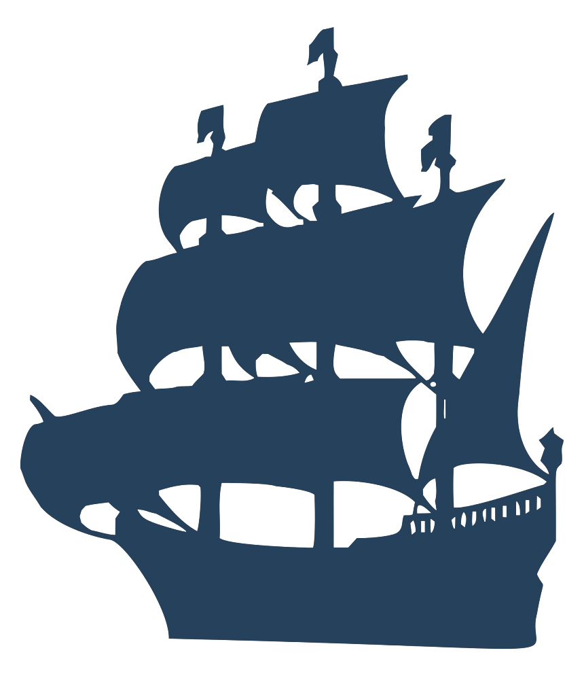
Home
Organisation
Gantt Charts
Logbook
Deliverables
Requirements
Architecture
Method Selection and Planning
GitHub
Game
Website
Docs
Credits
Download
Gantt Charts Weekly Snapshots
Autumn Week 9
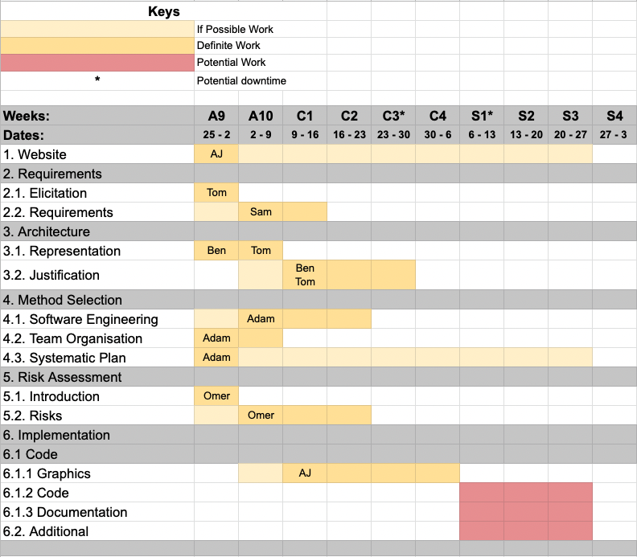
Autumn Week 10
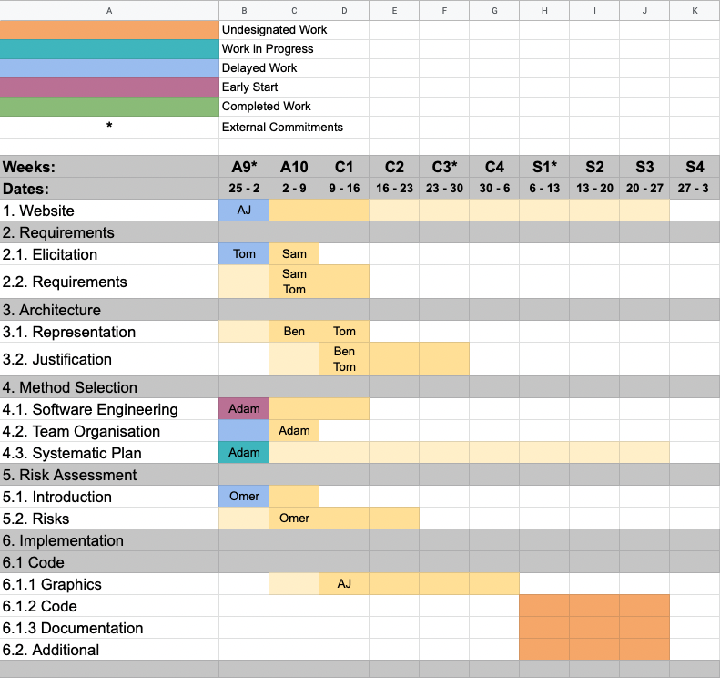
Christmas Week 1
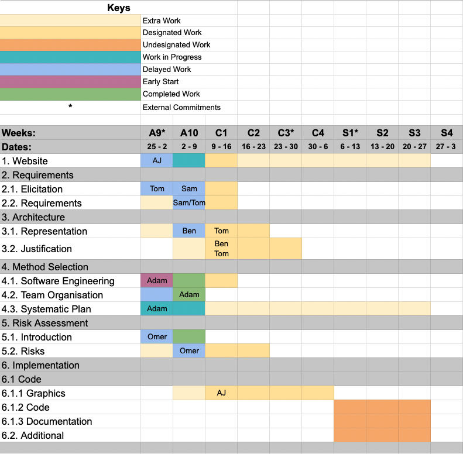
Christmas Week 2
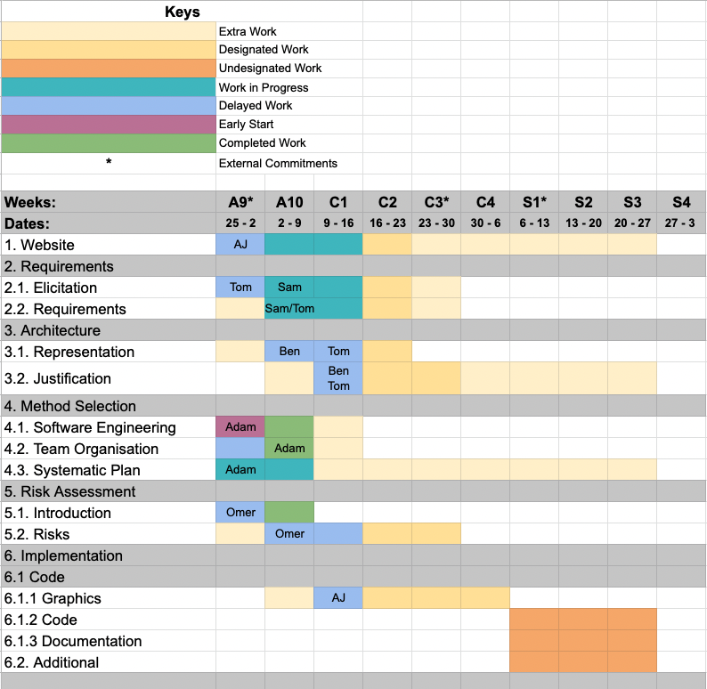
Christmas Week 3
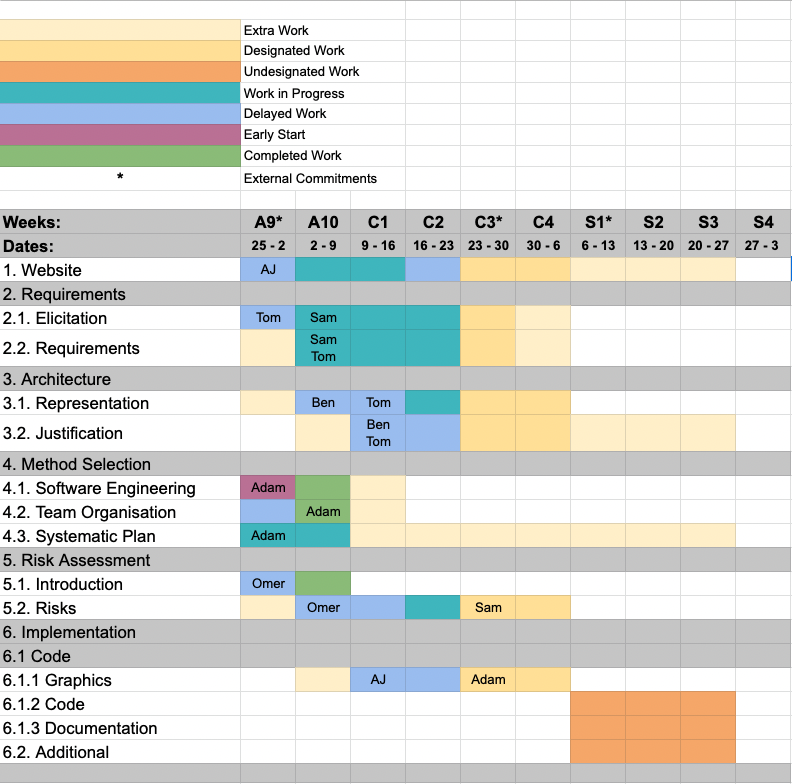
Christmas Week 4
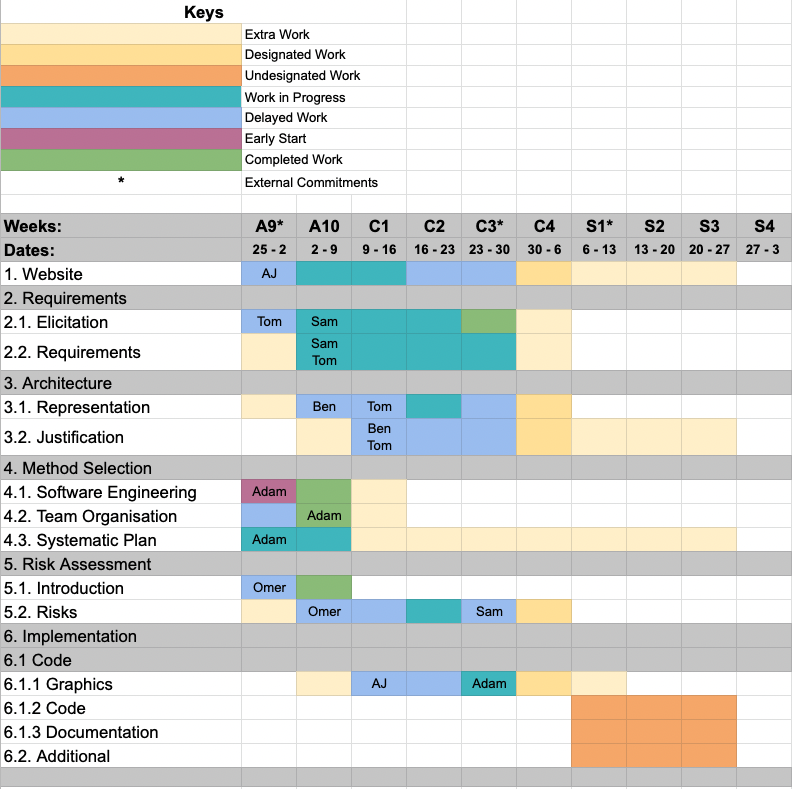
Spring Week 1
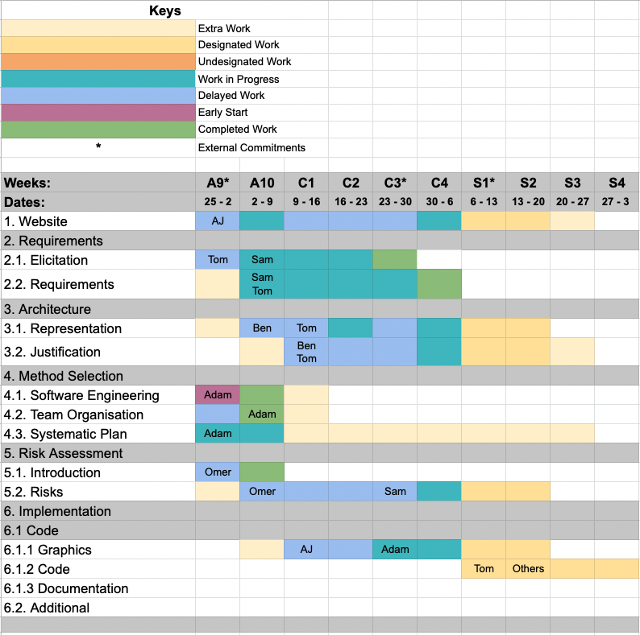
Spring Week 2
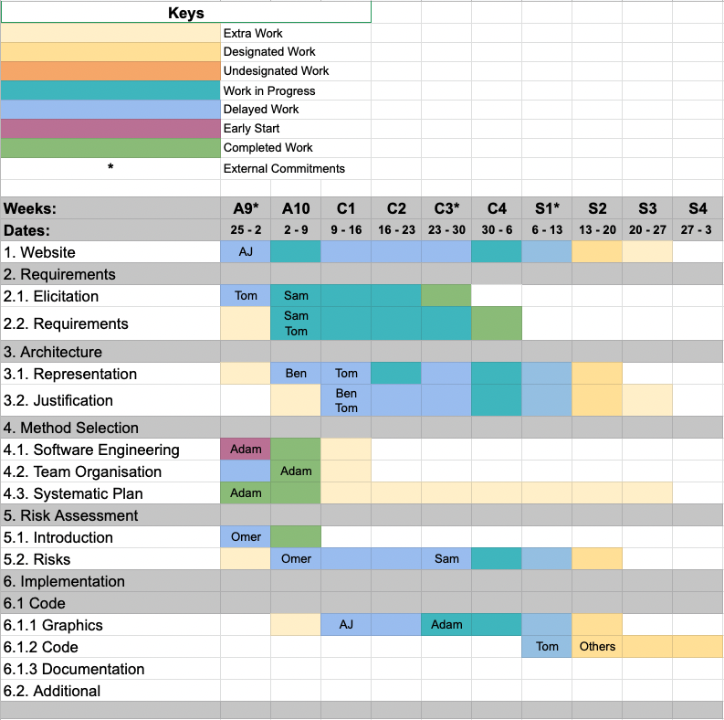
Spring Week 3
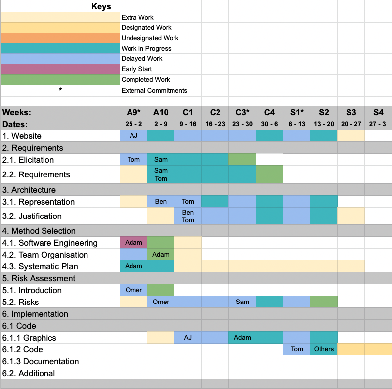
Spring Week 4
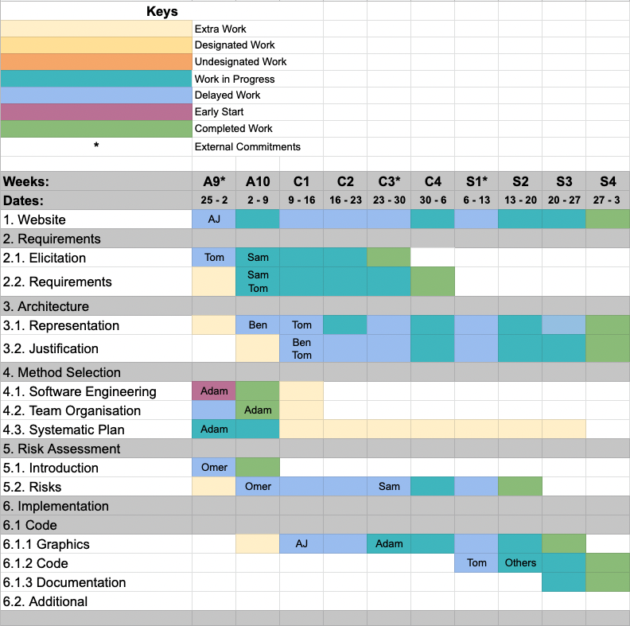